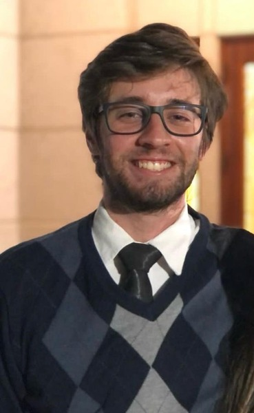
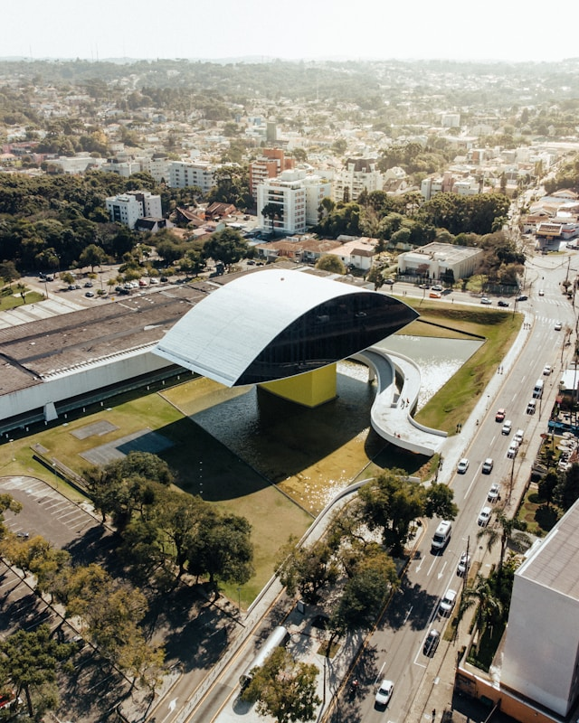

Davi Szeremeta Zabroski
About Me

Hello! I'm Davi. I am passionate about web development, engineering, and exploring digital spaces. I am currently learning Dynamic Web Fundamentals and focusing on HTML, CSS, and modern UI practices.
My Interests

I enjoy playing video games, basketball, and travel with my family. In my free time, I also love to play music, read, and continually learn new programming concepts.